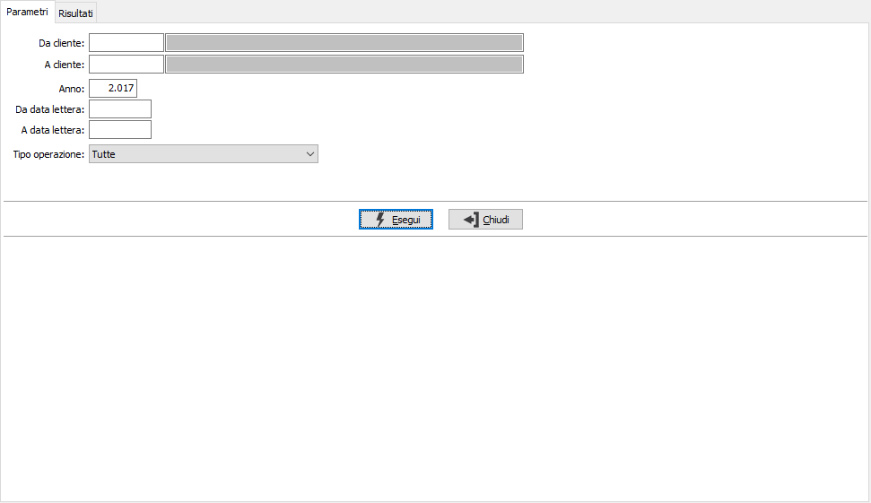
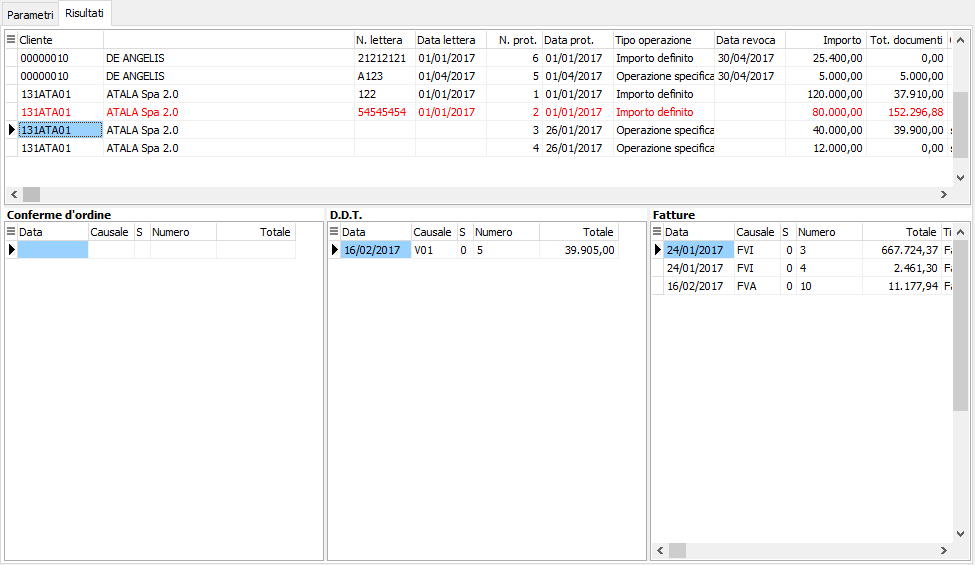

Assegnazione dichiarazioni a documenti clienti
La funzione consente di assegnare le dichiarazioni d’intento ai documenti attivi su cui è presente l’esenzione ma non è stata assegnata una dichiarazione d’intento.
La funzione non è attiva se gestita l'assegnazione multipla delle lettere di intento.
Nei parametri è possibile specificare un range di clienti, l’anno e un periodo di date relative alla data delle lettere; inoltre è possibile selezionare tutte le lettere oppure le singole tipologie (operazione specifica, importo definito) tramite la casella “Tipo operazione”.

La pagina dei Risultati riporta nella griglia superiore le singole lettere di intento e nella griglia inferiore i documenti associabili, cioè i documenti dello stesso cliente, con codice esenzione uguale a quello della lettera e che non abbiano già una lettera assegnata. Le lettere vengono evidenziate in rosso se il totale dei documenti associati è superiore all'importo definito sulla lettera e nella colonna “Tot. documenti” viene visualizzato il valore dei documenti associati.

Dalla sezione documenti di questa pagina è possibile assegnare la lettera agli ordini da evadere totalmente (non vengono visualizzati gli ordini parzialmente o totalmente evasi), alle bolle da fatturare, alle fatture da contabilizzare ed ai movimenti contabili utilizzando il doppio clic del mouse. E’ inoltre possibile manutenere i documenti su cui siamo posizionati utilizzando il menù contestuale richiamabile tramite il tasto destro del mouse.
Una volta assegnata il documento ad una dichiarazione tale documento non viene più visualizzato come assegnabile alle altre dichiarazioni e viene incrementato (o decrementato in caso di note di credito) il valore presente nella colonna “Tot. Documenti” visualizzata per la dichiarazione. Nel caso in cui assegnando un documento venga superato l’importo definito sulla dichiarazione viene richiesta una conferma aggiuntiva.